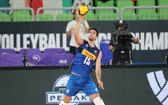

El voleibol, balonvolea o simplemente voley, es un deporte donde dos equipos se enfrentan sobre un terreno de juego liso separados por una red central, tratando de pasar el balón por encima de la red hacia el suelo del campo contrario.
Criollas de caraguas, pinkin de corozal, valencianas de juncos, leones de ponce, indias de mayaguas, llaneras de toa baja, etc.
El voleibol sentado es la variante del voleibol para atletas con discapacidad. Su adaptación se ciñe básicamente a la movilidad de los jugadores, cuya pelvis debe estar durante todo el juego en contacto con el suelo. Las normas del voleibol para discapacitados son similares a las del voleibol convencional.
El objetivo es pasar un balón por encima de la red y que éste caiga en el área del equipo contrario, lo cual sumará un punto. Sin embargo, los jugadores pueden usar cualquier parte de su cuerpo para mantener el esférico en el aire y pasarlo al otro lado.